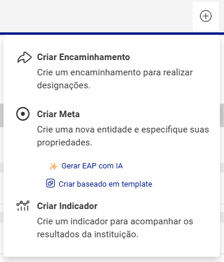
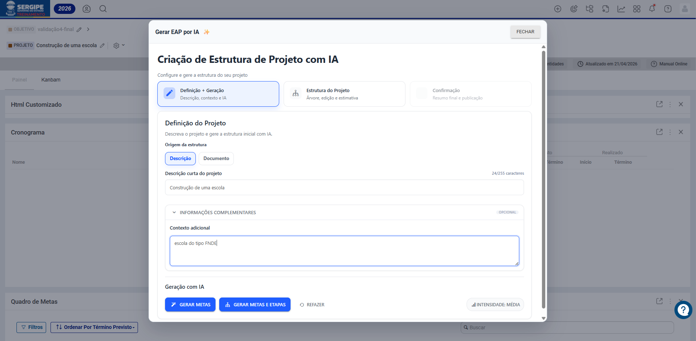
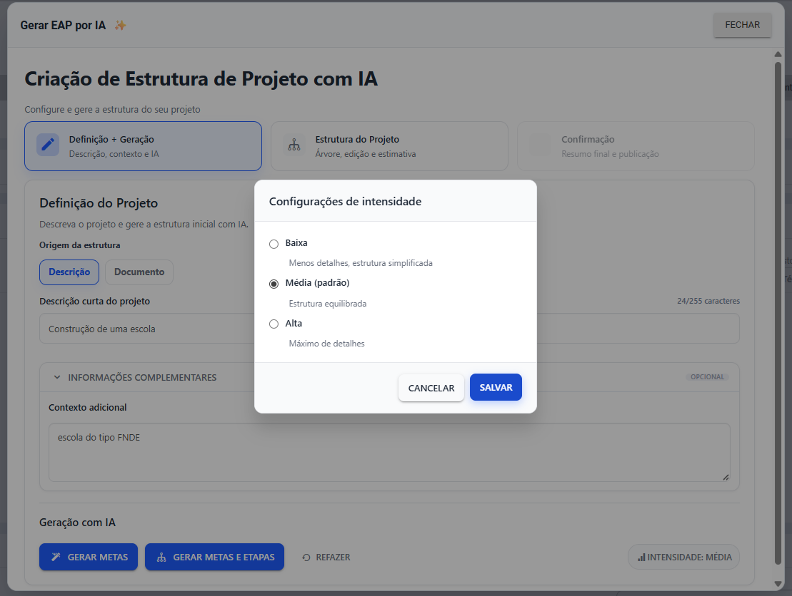
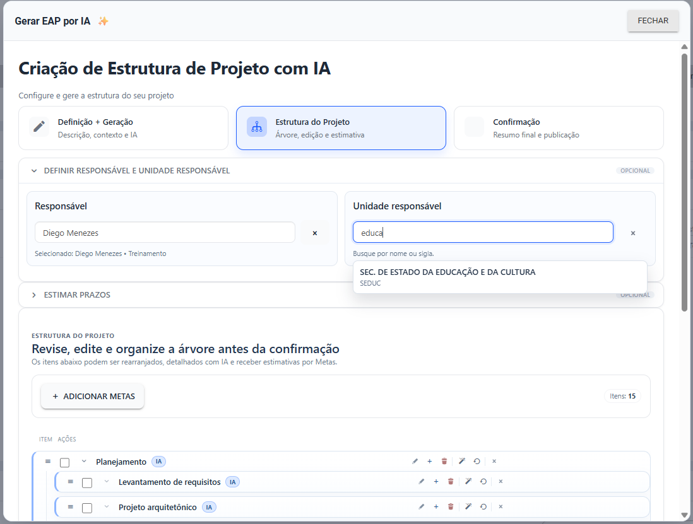
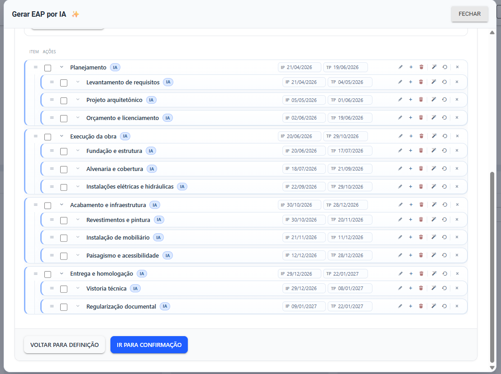
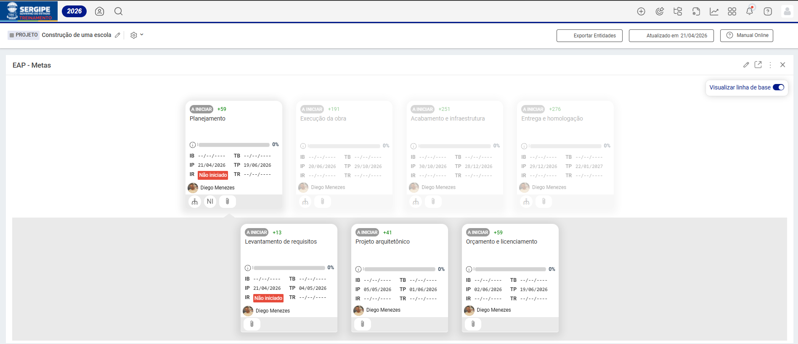

Estruturar um projeto do zero pode consumir horas de trabalho manual. Com o Criar EAP com IA, esse processo é transformado: a partir de uma simples descrição ou de um documento existente, a inteligência artificial sugere automaticamente etapas, tarefas e subníveis organizados de forma hierárquica, coerente e pronta para uso.
O resultado é uma Estrutura Analítica do Projeto (EAP) construída em minutos, com qualidade consistente e totalmente editável — liberando as equipes para o que realmente importa: executar e acompanhar os projetos.
💡 Disponibilidade: Esta funcionalidade utiliza inteligência artificial. Verifique com o administrador se o recurso está habilitado para o seu ambiente. Limites de uso podem ser aplicáveis conforme a configuração da conta.
Criar EAP com IA
⚠️ Nomenclatura por ambiente: Os nomes dos níveis hierárquicos (etapas, tarefas, etc.) variam conforme a configuração do ambiente do cliente. De forma geral, a funcionalidade sempre gera o nível imediatamente inferior ao item atual e o nível subsequente.
Como acessar
- Navegue até a entidade (Objetivo ou Projeto) onde deseja criar a estrutura.
- Clique no botão + no canto superior direito da tela.
- Selecione a opção Criar Etapa e, em seguida, clique em Gerar EAP com IA.

Passo 1 — Definição + Geração
O primeiro passo consiste em informar o projeto e acionar a geração da estrutura pela IA.

Origem da estrutura
Você pode escolher entre duas formas de entrada:
- Descrição: Digite uma descrição curta do projeto (até 255 caracteres). Ideal para projetos simples ou quando a ideia ainda está sendo estruturada.
- Documento: Envie um arquivo no formato TXT, DOCX, PDF ou XLSX. A IA lerá o conteúdo do documento e utilizará as informações para gerar a estrutura.
Contexto adicional (opcional)
O campo Contexto adicional permite fornecer informações complementares que orientam a IA na geração — como o tipo de projeto, a metodologia adotada ou o público envolvido. Quanto mais contexto, mais preciso e alinhado será o resultado.
Nível de intensidade
Clique em Intensidade para ajustar o nível de detalhamento da estrutura gerada:

| Opção | Descrição |
|---|---|
| Baixa | Estrutura simplificada, com menos itens agrupados |
| Média (padrão) | Equilíbrio entre quantidade e detalhamento |
| Alta | Máximo de detalhes, com maior granularidade de níveis |
Geração
- Clique em Gerar Etapas para criar somente o primeiro nível de itens.
- Clique em Gerar Etapas e Tarefas para criar a hierarquia completa com subitens.
- Use o botão Refazer a qualquer momento para descartar e gerar uma nova estrutura.
Passo 2 — Estrutura do Projeto
Após a geração, você pode revisar, editar e complementar a estrutura antes de publicá-la.
Responsável e Unidade Responsável (opcional)
Utilize os campos de autocompletar para atribuir um responsável e uma unidade responsável às etapas. A busca é feita por nome ou sigla, com integração direta ao cadastro da plataforma.

Estimativa de prazos (opcional)
Informe a data de início, a data de término ou a quantidade de dias e clique em Estimar Prazos. A IA distribuirá automaticamente as datas pelas etapas e tarefas de forma proporcional à hierarquia. Para remover as estimativas, clique em Limpar Estimativa.
⚠️ Atenção: A reordenação de itens por arrastar e soltar é desativada enquanto a estimativa de prazos estiver ativa.
Edição da árvore
Na seção Estrutura do Projeto, você pode:
- Editar o nome de qualquer item diretamente na árvore
- Adicionar novas etapas ou tarefas com o botão +
- Remover itens desnecessários
- Reordenar itens arrastando-os para a posição desejada
- Detalhar com IA um item específico para expandir suas subetapas
Passo 3 — Confirmação e Publicação
Antes de publicar, a tela de Confirmação exibe um resumo da estrutura: total de itens, quantidade de etapas principais e se há estimativas de prazo ativas.

Revise as informações e clique em Criar Estrutura. A criação é feita item a item, com uma barra de progresso em tempo real. Ao concluir, a página será recarregada automaticamente exibindo a EAP criada.

Dicas para melhores resultados
✅ Seja específico na descrição: quanto mais detalhada a descrição ou o documento, mais relevante será a estrutura gerada.
✅ Use o contexto adicional: informar a metodologia ou o tipo de projeto ajuda a IA a calibrar o vocabulário e as etapas sugeridas.
✅ Prefira intensidade Média ou Alta para projetos complexos que exigem maior detalhamento das fases.
✅ Revise sempre antes de publicar: a IA sugere uma estrutura inicial — cabe ao usuário validar e ajustar os itens conforme a realidade do projeto.
Conclusão
O Criar EAP com IA representa um salto de produtividade no planejamento de projetos, entregando em minutos uma estrutura hierárquica consistente que antes demandaria horas de elaboração manual. Com total liberdade de edição antes da publicação, as equipes ganham agilidade sem abrir mão da precisão.